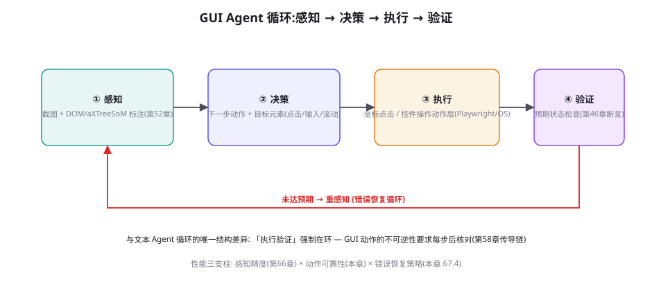
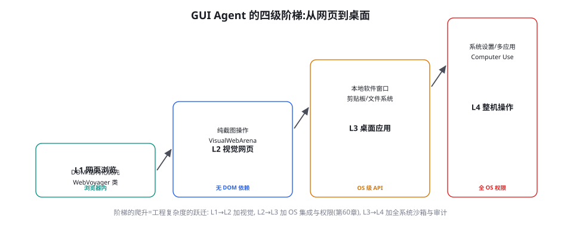

GUI Agent：从 WebVoyager 到 Computer Use
多模态篇的主战场章：让 Agent「看见并操作」图形界面。本章讲 GUI Agent 的四步循环（感知-决策-执行-验证）、从网页浏览到整机操作的能力四级阶梯、坐标点击与控件操作的技术分野、以及错误恢复（GUI 任务的头号生死题）——评测基线（第 52 章）在此变成工程蓝图。
四步循环：验证强制在环

四步的工程要点与「省一步」的代价分析：① 感知——第 52 章的表征三派（DOM/截图/SoM）在此落地为「双路感知」的默认架构：结构化通道（DOM/aXTree——语义精确）+ 视觉通道（截图——视觉保真），两路的融合策略是「结构为主、视觉校验」（第 66 章感知冗余）；② 决策——动作空间的设计是决策层的关键（动作原语越少越稳：click/type/scroll/navigate/wait 五原语覆盖 90% 场景——大动作空间增加决策负担且扩大误动作面）；③ 执行——坐标 vs 控件的分野（下一节专述）；④ 验证——每步动作后的「预期状态检查」（点击后弹窗出现了吗？输入后值对了吗？）——这是 GUI Agent 与「盲执行脚本」的本质区别，也是第 52 章「验证基建」的运行时形态。「省掉验证步」的性能错觉：跳过验证的 Agent 单步快 20~30%，但长任务的最终成功率通常低 30%+（错误在无验证的状态下级联——第 58 章传导链的循环版）——验证步的成本是「保险费」，GUI 域的赔付率极高。
四级阶梯：每级一次工程跃迁

四级的技术栈差异与选型建议：L1 网页浏览（DOM 优先）——Playwright/Puppeteer 的结构化接口 + 文本 LLM 即可（视觉通道只做校验）——WebVoyager（Koh et al. 2024, arXiv:2401.13919）验证了这条路线的可行性（端到端完成真实购物/资讯任务）——工程最轻、成功率最高，是「能用结构就用结构」原则的体现；L2 视觉网页（纯截图）——无 DOM 可用或 DOM 不可靠的场景（canvas 应用、强反爬站点、跨站一致性要求）——VisualWebArena（第 52 章）的评测域——需要原生 VLM 的定位能力（第 66 章能力矩阵）；L3 桌面应用——本地软件窗口（剪贴板、文件对话框、原生菜单）——OS 级 API（aXTree on Windows/UI Automation、Accessibility on macOS）+ 窗口管理的工程——AppAgent 类（第 68 章详述移动版）的技术延伸；L4 整机操作——Computer Use 的完全体（系统设置、跨应用协调、任意软件）——第 52 章 OSWorld 的评测域——整机沙箱（第 60 章整机 VM 档）+ 全系统审计是部署前置。阶梯的「降级智慧」：目标任务的 90% 若在 L1 可达，就不要为 10% 的边缘场景上 L4 的复杂度——「按任务的最高需求定级，按主导需求省成本」——阶梯是能力地图，不是升级的军备竞赛。
坐标点击 vs 控件操作：两条执行路线
执行层的两条路线各有地盘，理解分野是 GUI 工程的必修课：控件操作路线——通过 DOM 选择器/aXTree 引用点击「元素」（语义级动作：click(element_id="submit-btn")）——优点：精准（不受渲染偏移影响）、可验证（元素存在性可查）、抗缩放；缺点：依赖结构可用性（canvas 游戏、远程桌面、部分原生控件无结构）。坐标点击路线——模型输出像素坐标直接点击——优点：普适（有屏幕就能点）；缺点：定位误差直达执行（偏 20px 就是错）、分辨率/缩放变化脆弱、不可验证（「点到了什么」要靠后续感知确认）。生产架构的混合策略：控件优先、坐标兜底（结构通道可用时走控件，不可用时视觉定位 + 坐标——且坐标动作后强制「点后验证」（感知确认点中的元素符合预期——第 66 章双通道的执行面））。「点后验证」的具体实现：click(x,y) → 感知该坐标处的元素 → 与预期目标比对 → 不符则重试或升级——三步的成本是每动作多一次感知调用，换来的是坐标路线的「可验证化」——把它做成执行层的强制钩子，坐标点击才从「赌博」变成「工程」。
长程 GUI 任务的失败分析里，「一次错误后的恢复能力」是成功与失败的分水岭——多数任务不是「一步错到底」，而是「错一步后崩盘」（错误后进入无效循环、或「将错就错」越走越远）。错误恢复的工程框架四层：① 检测层——错误的三类信号：验证失败（第 ④ 步）、状态异常（预期页面没出现——URL/DOM 断言）、行为异常（同一动作重复 N 次——第 60 章「死循环抑制」的运行时版）；② 诊断层——错误归因（第 66 章四问表）：感知错（重感知/换表征）、决策错（回退重规划）、环境错（弹窗/加载——等待或处理干扰）、不可达（目标本身失效——上报）；③ 恢复动作库——按诊断分派：重试（带退避）、回退（undo/浏览器后退/重新导航——「可逆性」的运行时兑现）、绕行（替代路径——与第 20 章容错的降级思想同构）、上报（人工介入——第 60 章闸门）；④ 预算层——恢复的预算上限（单任务恢复次数 ≤3、单错误恢复深度 ≤2 步——超出即上报——「无限恢复」是最贵的失败形态）。四层合起来构成「GUI Agent 的免疫系统」——第 45 章训练域的「失败轨迹炼金术」在运行时的完整对应。评测的对应要求：错误注入（第 54 章）在 GUI 域是「必考题」——弹窗干扰、断网、页面改版三类注入进回归集——没有错误恢复评测的 GUI Agent，成功率数字都是「顺风局成绩」。
「点后验证」的执行层钩子实现——坐标路线安全化的落地代码：
def click_with_verify(x: float, y: float, expect: str,
page, max_retry: int = 2) -> ActionOutcome:
"""坐标点击 + 点后感知验证 — 坐标路线的强制钩子。"""
for attempt in range(max_retry + 1):
# ① 执行前快照 (回放与审计的锚)
before = page.screenshot()
# ② 坐标点击 (含稳定等待: 元素就绪才点)
page.wait_stable(x, y)
page.mouse.click(x * page.scale, y * page.scale)
# ③ 点后验证: 该坐标处现在是什么?
after = page.screenshot()
seen = vlm.ask(after, f"此刻坐标 ({x},{y}) 附近是什么"
f"控件? 是否符合: {expect}?")
if seen.matches(expect):
return ActionOutcome.OK
# ④ 不符: 诊断后重试 (错位补偿 / 滚动后再试)
offset = vlm.ask(after, f"目标「{expect}」当前在哪?"
"给出相对点击点的偏移")
if offset.is_within_clickable_range():
x, y = adjust(x, y, offset) # 坐标补偿重试
else:
scroll_toward(expect) # 目标不在视口
audit.log("click_verify_failed", expect, before, after)
return ActionOutcome.FAILED # 升级给错误恢复层实现的四个设计点：① 快照成对（点击前后各一张——验证与审计的共同原料，第 65 章留痕的执行层兑现）；② 验证问题带 expect 参数——验证的不是「点到了什么」而是「点到的符不符合预期」——带预期的验证比开放式感知便宜且判定干净；③ 失败的补偿式重试——不是盲目重试同坐标，而是「问出偏移量再补偿」（VLM 的相对偏移估计比绝对坐标稳——参考系近了）；④ 失败必须落审计并向上升级——执行层不吞失败（升级给第 67.4 节错误恢复层诊断——执行层只负责「打准」，不负责「想清楚为什么没打准」）。这个钩子是表 67-1 中所有「坐标 + 点后验证」行的标准件。
WebVoyager 与浏览器自动化的工程要点
以 WebVoyager 为代表的浏览器 Agent 架构（Playwright + VLM/LLM + 循环）沉淀出一组工程要点，逐条列出（每条都是社区反复踩坑后的共识）：① 等待策略优先于重试策略——80% 的「点击无效」是页面未就绪（网络空闲 + 元素稳定的双重等待，第 52 章稳定等待的运行时化）——「等够了再动手」比「点了失败再重试」便宜一个量级；② 会话状态管理——登录态、Cookie、购物车的持久化设计（任务中断恢复的前提）；③ 反爬的合规边界——速率限制、 robots 遵守、与站点方的关系（生产级浏览 Agent 必须有「站点友好协议」——这是第 61 章准入的反向面：你也是别人的供应链）；④ 动作的「可回放日志」——每步的截图前后对 + DOM 快照 + 动作参数——错误恢复与审计（第 65 章）的共同基础；⑤ 页面对象的「语义缓存」——同一站点的重复访问缓存「页面结构认知」（导航栏在哪、搜索框在哪——空间记忆的工程化，减少重复感知）。这五条没有一条涉及模型——浏览器 Agent 的工程含金量在「自动化基础设施」而非「模型」——与第 45 章环境工程、第 56 章评测工程一脉相承。
| 场景特征 | 推荐路线 | 感知配置 | 执行配置 | 验证配置 |
|---|---|---|---|---|
| 内部管理后台（结构规整） | L1 DOM 优先 | aXTree 为主 + 截图校验 | 控件操作 | DOM 断言 |
| 电商/内容站点（混合） | L1+L2 混合 | 双路并行 | 控件优先坐标兜底 | DOM + 视觉双验 |
| Canvas/绘图类应用 | L2 视觉为主 | 截图 + SoM | 坐标 + 点后验证 | 视觉状态比对 |
| 桌面原生应用 | L3 OS 集成 | aXTree + 窗口截图 | 控件优先（aXTree） | UI 状态断言 |
| 跨应用/系统级任务 | L4 整机 | 全屏截图 + 窗口枚举 | 坐标 + 键盘合成 | 系统状态检查器 |
给坐标点击装上「点后验证」并测量收益：写一个最小 GUI 循环（Playwright + 任一 VLM），在 10 个「需要点按钮」的任务上做 A/B——A 组裸坐标点击、B 组坐标 + 点后验证（感知确认点中元素）。统计两组的「误触率」与「任务成功率」。预期结果：B 组误触率显著低（多数裸点击的误触在 10%~25% 之间，加验证后 <3%），任务成功率的差距随任务步数放大（3 步任务差 5%，10 步任务差 20%+）。这个实验的产出还有一层价值：B 组的「验证失败轨迹」就是你错误恢复模块的第一批测试用例——一鱼两吃。
GUI Agent 的「动作空间设计」单独补一节，因为它比多数团队预想的更重要——动作空间的形状直接决定决策难度与误动作面。设计的三条原则：① 原语最小化——五原语（click/type/scroll/navigate/wait）起步，按需增补（drag/hotkey/select）——每加一个原语都是「决策空间 × 误动作面」的双重扩张（drag 的误动作后果远超 click——按危险度决定是否值得纳入）；② 危险度分级进动作定义——每个原语标注 L 级（第 60 章）：click 默认 L1（可逆）、type+submit 隐含 L2（可能创建记录）、navigate(external) L2——分级写进动作 schema，权限层自动路由（第 60 章五步校验链的动作侧接口）；③ 组合动作的宏机制——高频动作序列做成宏（「搜索(关键词)」= navigate + type + enter）——宏减少决策步数（一次决策替代三次）且内部实现可优化（等待策略固化在宏内）——宏的审计粒度按「宏=一动作」登记（决策链更清晰）。三条原则合起来的一句检验：「打开你的动作 schema，一个不认识你系统的新工程师能否在十分钟内判断每个动作的危险性？」——能，动作空间设计合格。
| 诊断结论 | 恢复动作 | 触发条件 | 预算约束 | 升级路径 |
|---|---|---|---|---|
| 页面未就绪 | 等待 + 重验证 | 状态断言超时 <5s | 重试 ≤3 次（退避） | 超限 → 环境错误 |
| 弹窗干扰 | 识别并关闭（通用弹窗处理宏） | 验证发现遮挡层 | 处理 ≤2 层 | 未识别的弹窗 → 人工 |
| 点击无效 | 坐标补偿重试（点后验证联动） | 点后验证不符且目标在视口 | 补偿 ≤2 次 | 超限 → 回退 |
| 导航迷失 | 回退（浏览器后退/重新导航基点） | URL/状态偏离任务轨道 | 回退 ≤2 次 | 超限 → 重新规划 |
| 流程不可达 | 重规划（子任务分解变化） | 恢复动作连续失败 | 重规划 ≤1 次/任务 | 再失败 → 人工上报 |
| 目标失效 | 停止 + 结构化上报 | 目标元素/页面确认不存在 | — | 立即（不再消耗预算） |
动作库的运营要点：每条「升级路径」的终点（人工上报）必须结构化（带上诊断上下文：错误类型、已尝试的恢复、最后两张截图——让人工接手时「三秒进入状态」——人机协作的交接质量决定 GUI Agent 产品的实际口碑）；动作库本身要「随事故生长」（每次真实事故的新恢复模式入库——与第 55 章红队回流、第 58 章矩阵回写同构的「事故资产化」纪律）。
「语义缓存」（浏览器工程五要点之⑤）的实现思路值得展开，因为它把「经验复用」引进了 GUI 执行层。缓存的两个层次：① 站点级布局缓存——对每个站点缓存「结构认知」（导航栏位置、搜索框选择器、分页控件的 DOM 特征）——键为站点域名，值为「页面骨架摘要」——下次访问先查缓存，命中则跳过「探索性感知」（直接向已知选择器寻址，视觉通道只做确认）；② 任务级路径缓存——同类任务的成功路径（「在该站点下单的操作序列骨架」）——键为「站点 × 任务类型」，值为「步骤骨架」（不含具体数据——数据是每次变的）——命中的路径作为「先验计划」（第 25 章情景记忆的执行层版），模型在其上填参数、按现场验证微调。缓存的失效治理是工程成败的关键：站点改版会让缓存变成「毒药」（过时的选择器把 Agent 带进沟里）——两道防线：缓存条目带「验证戳」（每次使用时用轻量断言验证缓存认知仍成立，失败即弃用并重探索）、缓存有条目上限与时间戳（站点级 30 天、任务级 7 天——GUI 世界变化快，缓存的新鲜度要求高于文本域）。语义缓存的收益实测通常在「重复任务的感知成本 −40%」量级——它是 GUI Agent 从「每次从零开始」到「越用越熟练」的关键一步——GUI 域的「学习」主要不是参数更新，而是经验缓存。
补一个「GUI Agent 的安全 checklist」收束（安全篇知识在本章的落地核对单，部署前逐项过）：① 动作分级齐备——每个原语与宏标注了 L 级（第 60 章评审卡过卡）；② 确认闸门在位——L2/L3 动作的前置确认链路通（含预演模式）；③ 点后验证强制——坐标动作无验证不可发出（执行层钩子）；④ 恢复预算封顶——所有循环类恢复有预算与升级路径（表 67-2 两列齐）；⑤ 出站与爬取合规——速率限制、目标站点协议、robots 遵守（第 61 章的反向面）；⑥ 会话日志可回放——截图对 + DOM 快照 + 动作参数的完整链（第 65 章完整性测试过）；⑦ 滥用面评估——你的 GUI Agent 能被用来做什么坏事（批量注册/抢购/刷量——第 62 章金字塔的映射与对策）。七项全绿再上线——GUI Agent 的安全面是安全篇所有章节的「集中考场」，因为它是唯一「直接操作世界」的形态——权限（60）、外泄（61）、滥用（62）的风险在这里同时兑现。
最后回应一个产品化绕不开的问题：「GUI Agent 的『人机协作模式』怎么设计？」——三种协作档位与其适用场景的映射（与第 60 章操作分级、第 62 章金字塔一脉相承）：① 全自动档（委托模式）——人给目标后离开——适用于 L0/L1 为主、验证完备、错误恢复成熟的高频流程——产品形态是「任务队列 + 完成通知」；② 协作档（陪伴模式）——AI 建议人执行或 AI 执行人确认——适用于 L2 为主、流程半规整的场景——产品形态是「共享光标 + 实时解释」（每步动作旁显示「我在做什么、为什么」——解释性是协作档的信任来源）；③ 教练档（观察模式）——AI 只看不动，提供步骤建议——适用于 L3 高危场景与新流程的「试跑期」（观察模式跑 20 次收集轨迹，既校准了系统又训练了「Agent 对该流程的先验」——观察数据就是第 45 章的训练数据）。三档位的切换权在用户（按任务与信任度自选），但系统的「默认档推荐」是产品的价值观表达（默认全自动是激进，默认教练是保守——按你的 L 级分布与验证成熟度选）。协作模式的设计，本质是把第 60 章的「权限分级」翻译成「体验分级」——安全架构与产品架构在这一刻合体。
三个高频疑问
Q：Computer Use 产品（Anthropic 的 Computer Use、各家浏览器 Agent）距离「日常可用」还有多远？按任务域拆开看更准确：「已可用域」——结构规整的网页工作流（表单填写、信息汇总、内部系统操作）——L1/L2 配置 + 错误恢复，配合人工抽检已经在生产服役（第 52 章「影子灰度」的分级）；「临界域」——视觉密集的网页（强设计感站点）、简单桌面应用——成功率在「可用但需要监督」区间——适合「AI 主操作 + 人类审批」的协作模式（第 60 章 L2 的产品形态）；「未到域」——跨应用长程任务、系统级配置、高反爬对抗——成功率与稳定性都未到生产线。「距离」的正确度量不是「几年」而是「你的任务的验证成本」：验证便宜的域先到（DOM 断言即验证），验证贵的域后到（视觉状态判断慢且脆）——把你的任务按验证成本排序，就能排出你自己的「可用时间表」。
Q：GUI Agent 的动作延迟（每步数秒到十几秒）在真实产品里能接受吗？延迟的「可接受性」取决于「人的参与模式」：后台批处理模式（夜间批量处理工单、定时报表）——延迟几乎无关（吞吐与成本才是指标——第 76 章账本）；协作陪伴模式（AI 在用户旁边一起操作）——每步 3~5 秒是体验红线（超出则「陪伴感」死亡——流式反馈（「正在查看订单页……」）能救一半）；委托模式（交给 AI 后人离开）——延迟不重要，成功率与可靠性重要（「慢但对」远胜「快但错」）。三种模式的延迟预算不同，但降延迟的工程手段通用：感知降频（不是每步都全量感知——动作后的验证用轻量断言，全量感知只在决策点）、动作批量化（连续输入拆解成 type 原语一次发）、预测性预感知（决策推理的同时并行预取下一步可能的截图——感知与推理的流水线化）。三手段叠加通常能砍掉 40~60% 的墙钟延迟——GUI Agent 的延迟工程与第 12 章推理优化、第 26 章上下文工程在「流水线」处会师。
Q：GUI Agent 与传统 RPA（UiPath 类）是什么关系？替代还是互补？两者在「动作执行层」重叠，在「任务获取层」根本不同——理解这个分层是产品定位的关键：RPA 的范式是「人写规则」——流程显式建模（拖拽流程图）、选择器硬编码、异常路径人工枚举——优点是确定性极强、审计清晰；缺点是脆弱（UI 一改流程就断）与昂贵（每条流程的维护成本）。GUI Agent 的范式是「目标驱动」——给目标不给流程（「把这个月的发票都录进系统」）、模型现场规划、错误现场恢复——优点是覆盖长尾与抗变化；缺点是确定性与审计弱（第 65 章留痕工程正是在补这个）。互补的产品形态：高频核心流程继续 RPA（确定性值得维护成本），长尾与易变流程交给 GUI Agent（覆盖 RPA 不经济的长尾），以及「RPA 的 Agent 化改造」——流程骨架保留（审计与确定性的锚），脆弱的选择器节点换成 Agent 的动态定位（骨架 + 智能关节的混合机器人）。判断你的场景该用哪个的单一句问：「这个流程一个月变几次？」——不变用 RPA，常变用 Agent，偶尔变用混合。
本章在全书网络中的连接：上游是第 52 章（评测基线→本章工程蓝图）、第 66 章（感知层）、第 60 章（权限分级——L4 的部署前置）、第 20 章（容错——恢复动作库的思想源）；横向与第 68 章（移动/OS——本阶梯的平行扩展）、第 62 章（滥用——GUI Agent 的滥用面：自动抢购/爬取的治理）并列；下游通向第 74 章（Computer Use 前沿）、第 84-86 章（实战篇的浏览器/桌面项目——本章的落地形态）、第 76 章（成本——延迟与 token 的账本）。复习锚点：四步循环图（67-1）、四级阶梯图（67-2）、两条执行路线与点后验证、错误恢复四层、五条工程要点、场景配置表（67-1 表）、RPA 三分句。
本章收尾，把 GUI Agent 放进「多模态分层栈」（第 66 章收尾的栈图）里标注各层的本章答案：感知层——双路感知与两阶段视觉的部署形态；表征层——差分截图与语义缓存；交互层——动作空间三原则与点后验证（本章的主体）；验证层——四步循环的强制第④步；恢复层——四层免疫与动作库。剩余两层（物理层、语音通道）交给第 69/72 章。「栈」的视角带来最后一个工程判断：GUI Agent 的「护城河」分布极其偏斜——模型层（感知与决策）是全行业共享的，护城河几乎全在执行层与恢复层（自动化基础设施 + 经验缓存 + 错误恢复库）——这些组件不能买到、只能磨出来，且随任务积累复利。给正在立项的团队一个直接推论：模型选型花 10% 的精力即可（季度复审流程管理），80% 的精力投给执行与恢复层的打磨——这与你从榜单分数得来的直觉相反，但它是 WebVoyager 之后所有生产落地的共同教训。
本章小结
- 四步循环，验证强制在环——跳过验证省 20% 单步、亏 30% 成功率：验证是保险费，GUI 域赔付率极高。
- 四级阶梯（网页 DOM → 视觉网页 → 桌面 → 整机）：按任务最高需求定级、按主导需求省成本。
- 执行两路线：控件优先、坐标兜底；坐标必须配「点后验证」才从赌博变工程。
- 错误恢复四层（检测/诊断/恢复库/预算）是长程任务的生死题——错误注入是 GUI 评测的必考题。
- 浏览器工程五要点（等待策略/会话状态/合规边界/可回放日志/语义缓存）——含金量在自动化基础设施。
- GUI Agent × RPA：动作层重叠、任务获取层根本不同——「流程一个月变几次」决定选型。
自测题
- 跑本页 A/B 实验：你的裸点击误触率是多少？点后验证把它压到了多少？
- 把你的目标 GUI 任务按四级阶梯归类：哪 90% 在低级、哪 10% 逼你升级？「降级智慧」能帮你省掉什么？
- 给你的 GUI Agent 设计错误恢复库：每类诊断（感知/决策/环境/不可达）各写 2 个恢复动作与预算上限。
- 用「一个月变几次」测试你的全部自动化流程：哪些该从 RPA 迁向 Agent？迁移的第一步是什么？
参考文献与延伸阅读
- Koh, J. et al. (2024). WebVoyager: Building an End-to-End Web Agent with Large Multimodal Models. arXiv:2401.13919
- He, Y. et al. (2024). WebVoyager: 基准与开源实现. github.com/AgentEs/WebVoyager
- Anthropic (2024). Computer Use Documentation (Claude 3.5 Sonnet). docs.anthropic.com
- Yang, Z. et al. (2024). SeeClick: Harnessing GUI Grounding for Advanced Visual GUI Agents. arXiv:2401.10935（GUI 定位的专用训练）
- Cheng, K. et al. (2024). SEEC / GUI 错误恢复相关系列工作. arXiv:2404.14574（GUI Agent 的自纠错方向）
- 工程参照：Playwright · browser-use（浏览器 Agent 的开源执行层）